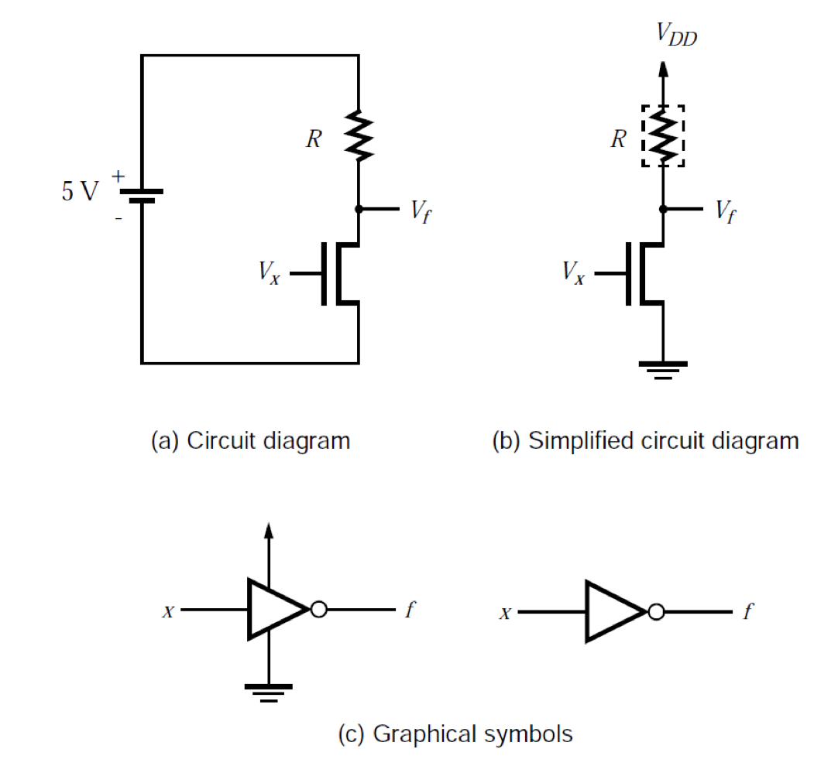
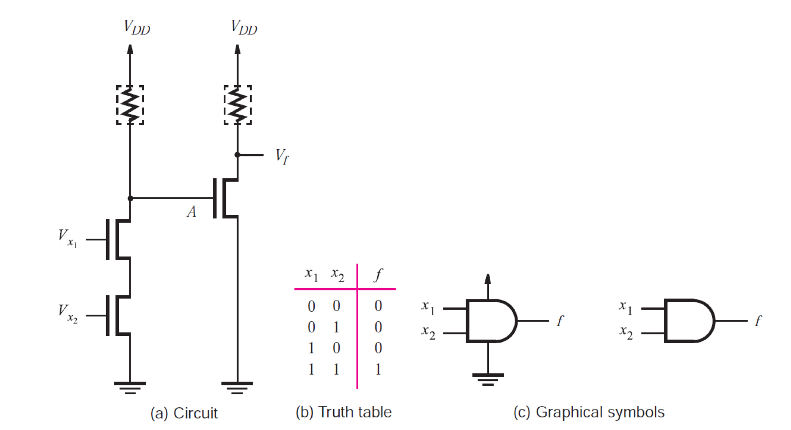
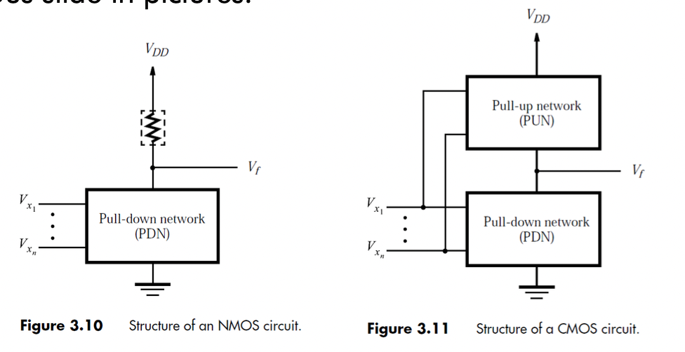
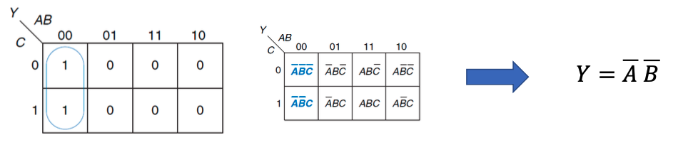
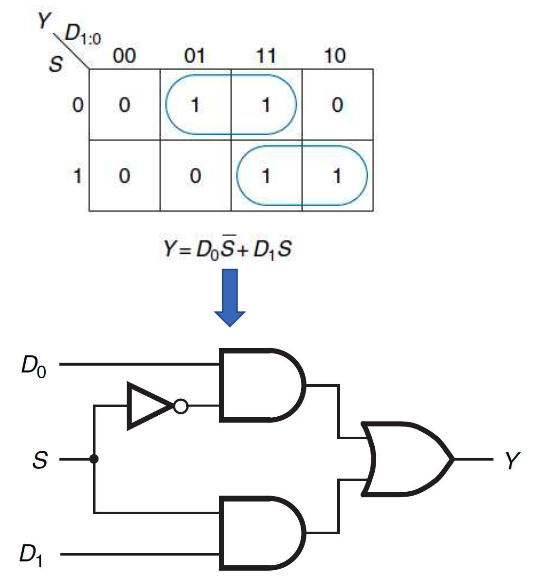
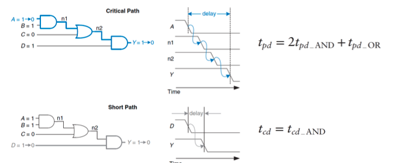
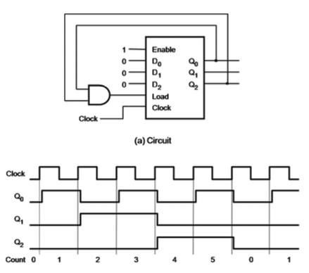

There’s a specification developed by the IEEE for representing real
numbers in a scientific like binary notation. It’s called IEEE 754.
Before we begin, let’s define some terms.
significand: A component of a finite floating-point
number containing its significant digits. The significand can be thought
of as an integer, a fraction, or some other fixed-point form, by
choosing an appropriate exponent offset. A decimal or subnormal binary
significand can also contain leading zeros
subnormal number: In a particular format, a
non-zero floating-point number with magnitude less than the magnitude of
that format’s smallest normal number. A subnormal number does not use
the full precision available to normal numbers of the same format
trailing significand field: A component of an
encoded binary or decimal floating-point format containing all the
significand digits except the leading digit. In these formats, the
biased exponent or combination field encodes or implies the leading
significand digit.
NaN: not a number—a symbolic floating-point datum.
There are two kinds of NaN representations: quiet and signaling. Most
operations propagate quiet NaNs without signaling exceptions, and signal
the invalid operation exception when given a signaling NaN operand.
biased exponent: The sum of the exponent and a
constant (bias) chosen to make the biased exponent’s range
nonnegative.
Below follows a abbreviated version of the specification for IEEE 754
Binary Interchange Format Encoding, which you may use to decode IEEE 754
floating point numbers.
Floating-point numbers are encoded in k binary bits in the following
three ordered fields:
1-bit sign (\(S\))
\(w\)-bit biased exponent \(E = e + bias\)
\((t = p - 1)\)-bit
trailing significand field with the the leading bit of
the significand inplicity encoded in the biased exponent \(E\)
Notice: We call this field the “mantissa” in
this course.
Encode the decimal value of -10.75 into a single precision
floating-point number.
Identify the sign:
\(S = 1\)
Convert the integer part:
\((10)_{10} = (1010)_2\)
Convert the fractional part:
Multiply the fractional part repeatedly by 2.
Keep track of the integer part of the result.
Stop when the fractional part is 0.
\(0.75 \cdot 2 = 1.5\) (1)
\(0.5 \cdot 2 = 1\) (1)
thus \((0.75)_{10} =
(0.11)_2\)
Positive number before normalization:
\((10.2)_{10} = (1010.11)_2\)
Normalize and get the exponent
\((1010.11)_2 = (1.01011)_2 \cdot
(2^3)_{10}\)
Thus the trailing significand is \((01011)_2\)
\(2^{E - bias} = 2^3\)
\(E - 127 = 3\)
\(E = 127 + 3 = (130)_{10} =
(10000010)_2\)
Construct the floating point number
<sign> <exponent> <mantissa>
1 10000010 01011000000000000000000
Implementation of Number
Systems in C
Logic Gates and Logic Levels
Transistors,
nMOS and CMOS logic gates, power consumption
Mosfet Transistors
Transistors are basically small electronic switches and are thus
used to implement logic gates.
We’re focusing on metal-oxide semiconductor field-effect
transistors (MOSFETs) because they are the most common type of
transistor.
Use a field effect to switch, working on a voltage level.
The gate controls the switching of the transistor depending on the
voltage level over the gate.
nMOS is on when a voltage is applied to the gate.
When gate is zero, open circuit between source and drain.
When gate is one, closed circuit between source and drain.
pMOS is off when a voltage is applied to the gate. (as indicated by
the bubble on the gate)
When gate is zero, closed circuit between source and drain.
When gate is one, open circuit between source and drain.
The voltage required to switch the transistor is called the
threshold voltage, \(V_t\), and is typically between 0.3 to 0.7
V.
CMOS Transistors
nMOS pass 0’s well, but pMOS pass 1’s well.
Therefore logic gates are build using a combination of nMOS and pMOS
transistors.
This is called a complementary mos (CMOS)
transistor.
The CMOS transistors are used to implement logic gates.
NOT gate built with an
nMOS transistor

R is a pull-up resistor.
In the case that the gate is closed, the resistor provides a voltage
drop by allowing current to flow through it to ground.
In the case that the gate is open, all current flow to the output,
however, there is negligible current flow to the output. Causing almost
no voltage drop.
In case where \(V_x = 5V\), the
input is 1 and \(V_f = 0V\), the output
is 0.
In case where \(V_x = 0V\), the
input is 0 and \(V_f = 5V\), the output
is 1.
NAND gate using an nMOS
transistors
If both gates are closed, the resistor will be shorted to ground,
causing \(V_f = 0V\).
If either one is not closed, the resistor will not be connected to
ground and thus no current will flow causing \(V_f = 5V\).
AND gate built with an
nMOS transistors

An and gate is just an nand and not gate connected together.
Since the transistors have high input impedance, the voltage does
not drop between the two parts.
NOR gate built with an
nMOS transistors
Like an and gate but connected in parrallel instead of in series.
Thus current can flow in two possible paths, meaning either path or both
can be high to cause a voltage drop on the resistor. Thus \(V_f = 0V\). If both are off the resistor
wont be shorted to ground and thus no current will flow causing \(V_f = 5V\).
OR gate built with an
nMOS transistors
An or gate is an nor gate connected to a not gate.
CMOS Logic Gates
nMOS uses transistor to pull low and resistor to pull
low.
pMOS uses transistor to pull high and resistor to pull
low.
This causes power to be dissapated by the resistor, which is a
problem.
CMOS transistors use a combination of nMOS and pMOS
transistors.
nMOS is used to pull low and pMOS is used to pull high. This is
called a complimentary pair.
Special care must be taken to prevent both from being open to
prevent \(V_dd\) short to ground.
This causes almost now current to flow through the component when
in a steady state. Meaning almost no power is being dissipated.

CMOS NOT gate
The CMOS NOT gate is a CMOS gate that is built using a complimentary
pair of nMOS and pMOS transistors.
If \(V_x = 0\), \(T_1\) is on and \(T_2\) is off. Since \(T_1\) is on, \(V_f = V_{DD}\) as it is pulled up to \(V_{DD}\).
If \(V_x = 1\), \(T_1\) is off and \(T_2\) is on. Since \(T_2\) is on, \(V_f = 0\) as it is pulled down to
ground.
CMOS NAND gate
\(T_3\) and \(T_4\) are the same as the nMOS
implementation of an nand gate, both must be high to
pull the output \(V_f\)
low. However, we need to replace the resistor with a
complimentary pair of nMOS and pMOS transistors.
Since it is a complimentary pair, can deduce that
the oposite must be true for the pull high conditions.
Meaning either\(T_1\)
or \(T_2\) must be low to pull
the output \(V_f\) high.
Also since they are opposite, there is always one condition met
preventing a short to ground. When pulling high we are never also
pulling low!
CMOS AND gate
NAND gate connected to a NOT gate.
CMOS NOR gate
Again similar to the NOR gate in the nMOS implementation, but with a
complimentary pair of nMOS and pMOS transistors to replace the
resistor.
In the case where output pulled high, either\(V_3\) or \(V_4\) must be high to pull
the output \(V_f\)low.
The compliment of this is that
both\(T_1\) and \(T_2\) must be low to pull
the output \(V_f\)high.
CMOS OR gate
NOR gate connected to a NOT gate.
Short Circuits and Floats
If both the pull up and pull down networks are on at the same time a
short circuit will exist between \(V_{DD}\) and GND which could destroy the
transistors which will consume a lot of power.
If both the pull up and pull down networks are off at the same time
a float will exist since the output is not connected
\(V_{DD}\) or GND.
We prevent this by using the rule of conduction
complements.
When the nMOS transistors are in series, the pMOS transistors must
be in parallel and vice versa.
Power Consumption
Energy used per unit time.
Performance per watt is important and should not be overlooked.
Digital systems draw both static (power used in
steady state) and dynamic (power consumed while
changing state) power.
Logic gates have capacitance, and thus the switch is not instant and
consumes power in so doing.
The energy consumed to change capacitance \(C\) to voltage \(V_{DD}\) is \(C
\cdot V_{DD}^2\)
If the voltage on the capcitor switches at frequency \(f\)
Charges and and drains the capacitor \(f/2\) times per second.
Dynamic power consumption is \(P_{dynamic}
= \dfrac{1}{2} \cdot C \cdot V_{DD}^2 \cdot f\) watts.
Idle circuits still leak small amoint of current, called
leakage currant or quiescent supply
current\(I_{DD}\) flowing
from \(V_{DD}\) to GND.
Static power consumption is \(P_{static} =
I_{DD} \cdot V_{DD}\) watts.
Combinational logic
Boolean algebra
From logic
gates to multilevel combinational logic
X’s and Z’s
Illegal X
Boolean algebra is limited to to O’s and 1’s.
Real circuits may have illegal states.
The symbol \(X\) indicates that the
circuit node has an unknown or illegal
state.
This happens if it is being driven to both 1 and 0 simultaneously.
This is called contention.
The value is somewhere in between the two values. (0 and \(V_{DD}\))
It is often in the forbidden zone.
This causes a lot of power to flow between the gates which may
damage the transistors.
Don’t Care X
Confusingly the symbol \(X\) may
also be used to indicate don’t care values in truth
tables.
When in truth table, it indicates the value is unimportant and may
be any state (0 or 1)
BUT when in a circuit, it will indicate an illegal
state.
Floating Value Z
The symbol \(Z\) is used to
indicate the node is not driven to HIGH or LOW.
This is called a floating value, high
impedance or high Z.
Floating value can have any value \(\left[0, V_{DD}\right]\)
Causes erratic behavior in the circuit as bit is randomly
changing.
Tristate
Tristate is a 3-state logic.
Driven HIGH (1)
Driven LOW (0)
Floating (Z)
When it is floating, it can accept input (0 or 1) from external
sources.
High impedance means the node is electrically
removed from the circuit \(R \to
\infty\)
The tristate buffer controls whether the signal is
enabled (0 or 1) or inactive (Z).
Useful for shared databus to pick which device is using the databus
at this time.
Karnaugh maps
We’ve synthesized logic circuits uisng sum-of-products (SOP) and
product-of-sums (POS).
These implementations are not necessarily optimal.
Previously we did these optimizations manually using boolean
algebra.
Karnaugh maps (K-maps) are graphical method for
simplifying boolean equations.
We use CAD tools in practice to simplify the equations
automatically.
K-maps are only really useful when the number of inputs are less
than 5.
Karnaugh maps are built on two principles:
T10: \(P A + P
\overline{A} = P\)
This allows us to replace two product terms differing with one value
with a single product that does not include the value. (ie. we can
eliminate \(A\))
Gray codes
Uses a sequence of bit where only one bit changes from one state to
the next.
K-maps three-input example
The top row of a K-map gives us 4 possible values for input \(A\) and $B using gray codes (00, 01, 11,
10).
The left column gives us the 2 possible values for input \(C\).
Each square in a K-map corsponds to a row in the truth table and
contains the value of the output.
Using algebra we would have gotten \(Y =
\overline{A} \cdot \overline{B} \cdot \overline{C} + \overline{A} \cdot
\overline{B} \cdot C = \overline{A} \cdot \overline{B}
\cdot(\overline{C} + C) = \overline{A} \cdot \overline{B}\)
Gray codes
Each square or midterm differs from an adjacent square by one
bit.
Each adjacent square shares the same literls exept for one.
That’s the reason for the peculiar order: 00 01 11 10.
Furthermore K-maps wrap around to form a torus, since the squares on
the far right differs from the far left by one bit and the top from the
bottom by one bit.
K-map minimization
Group 1’s in adjacent squares (rows and colums but not diagonals) on
a k-map using the fewest groups possible.
For each group, we write the product of the implicants.
remember: implicant is product of one or more literal
Variables whose true and complementary forms are both in the group
are eliminated.
This means that if both \(C\) and
\(\overline{C}\) are in the group, we
can eliminate \(A\) from the equation
as seen below.

we add the all the implicants of the groups together with an
or.
Rules for minimization
Use the smallest number of groups possible.
All groups must only contain 1’s.
Groups must be rectangular block that is a power of 2. (sides of
length \(2^n\), ie. 1, 2, 4 etc.)
Each group must be as large as possible.
A square may be contained in multiple groups if so doing results in
less groups.
See also: Handwritten notes that may help with the
minimization process.
Aside: Karnaugh maps for
4-input logic
Incompletely specified
functions
In digital systems, often certain conditions can not occur.
Input conditions that can never occur can be ignored and the outputs
are called don’t care (indicated by \(X\)).
A function with “don’t cares” is an incompletely specified
function.
Such outputs can be treated as either 0 or 1, whichever makes
simplification easier.
Seven-segment display
with don’t cares
The 7-segment display is a common example of an incompletely
specified function.
The display is a binary number that can be represented by 7
segments.
The display can be represented by the following truth table:
This is a decimal decoder not an hexadecimal
decoder.
If we group the don’t cares, we can simplify the equation futher than
assuming they are 0’s:
Note: This can get tricky, you must make sure you’re
using the least amount of groups possible.
We need to design 7 individual circuits for each output.
Combinational Building
Blocks
Combinational logic is often grouped into building blocks for larger
circuits.
This way we can abstract the logic and make it
easier to understand. Hiding the implementation details and emphasizing
the function.
We’ve already looked at some examples:
Priority circuits
Seven-segment display decimal decoder
Multiple Output Functions
Practical digital circuits often implement many single output
functions.
Each function may be implemented with its own circuit, but is often
not the minimum cost implementation of the whole circuit.
Sometimes we have duplicate product terms that may share the same
output.
Using K-maps we can easily identify these shared terms.
Notice: The cost is the sum of the inputs and the
gates
Total cost = 28 (4 gates + 10 inputs x 2 circuits)
However we can see the \(x_1 \cdot
\overline{x_2}\) and \(\overline{x_1}
\cdot x_3\) term is shared between the two circuits when
implementing the logic.
Total cost = 22 (6 gates + 16 inputs)
Sometimes the best individual solutions are not the best overall
solution.
With optimal solutions, for the individual functions we have no
shared product terms.
Total cost = 29 (8 gates and 21 inputs)
However, finding an non optimal solution with shared product terms
might be better in the bigger picture, so don’t dismiss it in favor of
the optimal individual solutions.
These realisations although not optimal share the product terms
\(x_1 \cdot x_2 \cdot x_3\) and \(\overline{x_1} \cdot x_2 \cdot x_3 \cdot
\overline{x_4}\).
Total cost = 23 (6 gates and 17 inputs)
Multiplexers
Multiplexers are used to select between two or more
inputs to a single output.
A 2-to-1 (2:1) multiplexer:
\(S\) is also called the
control signal, since it controls the state of the
multiplexer.
We call multiplexers muxes for short.
2:1 Multiplexer implementation
The sum-of-products (SOP) implementation of a 2:1 multiplexer is
shown below.

Wider Multiplexers
A 4:1 multiplexer has four inputs and one output.
Generally the number of inputs is an integer (\(N\)) power of 2, \(2^N\).
An N:1 multiplexer needs \(\log_2{N}\) inputs and one output.
Wider multiplexers can be built using SOP logic or multiple smaller
multiplexers.
For example an 4:1 mux can be implemented using only 2:1 muxes as
shown below.
The AND gates essentially act as selectors. They enable the passage
of data bit \(D_N\) only if the all the
other inputs to the AND gate are HIGH. (You can think of all the other
inputs as the control signals, and all the control signals must be 1 to
pass through \(D_N\).) Only one AND
gate is enabled at a time and the OR gate thus only passes though the
selected data bit \(D_N\).
Multiplexer logic
Multiplexers can be used as lookup tables to
implement any logic function.
The implementation is easy to understand and implement, but not the
most efficient for minimizing the cost.
For example we can use a 4:1 mux to implement an two input AND
gate.
If we’re smart enough we can reduce the size of the mux by half.
Any \(N\)-input logic function can
be implemented using an \(2^{N-1}\)-input mux.
We rewrite the truth tables to by combining pairs of rows that
eliminate the right most input by expressing the output in terms of this
variable.
We use this grouped input as the select input to the mux and the
remaining inputs as the data inputs (also with 0’s and 1’s)
Example: Three
input XOR function with 2:1 muxes
Make groups of input conditions.
Split into 2 blocks where \(w_1 =
0\) and \(w_1 = 1\)
You can notice that if you ignore the \(w_1 = 0\) input, the other inputs is an XOR
gate.
And if you ignore the \(w_1 = 1\)
input, the other inputs is an NOT XOR gate.
Since we’re using 2:1 muxes, we eliminated just one input.
Example: Three input
XOR gate with 4:1 muxes
By using 4:1 muxes we can eliminate two inputs.
We will make 4 groups thus:
\(w_1 = 0\) and \(w_2 = 0\) and notice that \(f = w_3\)
\(w_1 = 0\) and \(w_2 = 1\) and notice that \(f = \overline{w_3}\)
\(w_1 = 1\) and \(w_2 = 0\) and notice that \(f = \overline{w_3}\)
\(w_1 = 1\) and \(w_2 = 1\) and notice that \(f = w_3\)
Example:
Three input majority function with a 2:1 mux
A majority function checks that at least half of the inputs are
HIGH.
If the majority is found, the output is HIGH.
If the majority is not found, the output is LOW.
We can implement this using a 2:1 mux as shown below.
This implementation can also be derived algebraically:
We’ve essentially created a mux, since the one implicant has \(\overline{w_1}\) and the other term has
\(w_1\). We’re selecting \(w_2 \cdot w_3\) if \(w_1 = 0\) and \(\overline{w_2} \cdot w_3 + w_2 \cdot
\overline{w_3} + w_2 \cdot w_3\) if \(w_1 = 1\).
We expand the term \(\overline{w_2} \cdot
w_3 + w_2 \cdot \overline{w_3} + w_2 \cdot w_3\) by adding \(w_2 \cdot w_3\). This is part of
shannon expansion.
\(f_{\overline{w_1}}\) is called
the cofactor of \(f\) with respect to
\(\overline{w_1}\)
\(f_{w_1}\) is called the cofactor
of \(f\) with respect to \(w_1\).
Now see additional handwritten notes since it’s a lot of math
I’m not gonna write with LaTeX.
One-hot
One-hot is a group of bits among which the legal
combinations of values are only those with a single high (1) bit and all
the others low (0).
This means only one bit is high at a time.
Binary
Gray Code
One-hot
000
000
00000001
001
001
00000010
010
011
00000100
011
010
00001000
Binary Decoders
Decoder circuits are used to decode encoded data.
A binary decoder as \(N\) inputs
and \(2^N\) outputs. An optional enable
input can be used to enable the decoder.
An output line is high only when the binary input is equal to the
index of the output line (i.e. one-hot encoded output).
The enavle line is used to enable the outputs. If \(En = 0\) then all outputs are low.
Decoders: 2-to-4 (2:4) binary
decoder
The two inputs represent a 2 bit number which the decoder uses to
assert one of the four outputs.
This converts a 2 bit binary number into a 4 bit one-hot encoded
output.
It may be implemented using sum of products as shown
below.
Similar to the multiplexer implementation, the binary decoder does
not pass a data bit through but instead passes a high. (think of it as
all the data bits being high).
Decoders: 3-to-8 (3:8) binary
decoder
A 3:8 decoder may be implemented using two 2:4 decoders as shown
below.
We split the 3 bit binary number into two parts the 2 bit lower half
and the last most significant bit.
The most significant bit is used to select which of the two 2:4
decoders to use.
The first decoder decodes the first half of the 3 bit number and the
second decoder decodes the second half. (000 - 011 and 100 - 111
respectively).
Decoders: 4-to-16 (4:16)
binary decoder
We may use this method to implement decoders of any size \(N\)-to-\(2^N\).
See below for an example of a 4:16 decoder using only 2:4
decoders.
We use another 2:4 decoder to handle the activation of the decoders
via the enable line.
Binary Decoder Applications
Port expansion for devices with limited number outputs.
Selecting memory blocks in computers (address decoding).
Implementing a multiplexer and demultiplexer.
Implementing logic functions using shannon expansion or direct logic
implementation.
Demultiplexers
Multiplexer circuits multiplexes \(2^N\) data inputs onto a single output
under the control of \(N\) select
lines.
Demultiplexers are the inverse of multiplexers. They place the value
of a single data input onto exactly one output line.
They may be implemented using a binary decoder.
For example a 2:4 decoder used as a 1:4 demultiplexer.
The \(En\) input serves as the data
input and \(y_0\) to \(y_3\) are the data outputs. The value of
\(w_1 w_2\) determines which of the
outputs is set to the value of \(En\).
Encoders
Encoders are the inverse of decoders. The convert into a more
compact form.
Binary encoders encodes \(2^N\)
inputs into a \(N\) bit binary number.
They convert a one-hot encoded input into a binary number.
Exactly one of the inputs should be high (one-hot) and the output
presents the binary number that identifies the input which is high.
Used to reduce the number of bits needed to represent data.
Useful for data transmission. Encoding allows for fewer transmission
bits.
Thus also useful for storage of data, as it consumes less space
(bits).
4-to-2 (4:2) binary encoder
We assume that the 4 inputs are one-hot encoded. All other
combinations are illegal and treated as don’t care.
The one-hot encoded inputs are converted into a binary output.
The output \(y_0\) is high when
\(w_1\) or \(w_3\) is high.
The output \(y_1\) is high when
\(w_2\) or \(w_3\) is high.
Priority Encoders
The priority encoder is a special case of the 4:2 encoder.
Each input has a priority associated with it.
The output indicates the active input with the highest
priority.
It is assumed that the least significant bit, \(w_0\), is the lowest priority, and the most
significant, \(w_3\), bit is the
highest priority.
Outputs \(y_0\) and \(y_1\) represent the binary number that
identifies the highest priority input.
\(z\) indicates some input is high.
(thus it is \(z = 0\) when all inputs
are low).
Timing
We’ve only focused on optimising ciruits cost.
However, the timing of the circuits is important:
making it run fast and correct withing a given time frame.
The output takes some time to change in response to an input change:
There is a delay for change in the output to take
effect.
Above is called a timing diagram.
It portrays the transient (transitional) response of a buffer
circuit when the input changes.
Transition from LOW to HIGH is called the rising
edge.
Transition from HIGH to LOW is called the falling
edge.
The arrow shows that the response (rising edge) of \(Y\) is caused by the input (rising edge) of
\(A\).
Delay is measured from the 50% point of the input
to the 50% point of the output.
The 50% point is when the transition is halfway through
completing.
The delay is caused by capacitance and silicon material.
Propagation and
Contamination Delay
Combinational logic timing is characterised by its
propagation delay and contamination
delay.
Propogation delay \(t_{pd}\) is the
maximum time from when an input changes until the output(s) reach their
final value.
Contamination delay \(t_{cd}\) is
the minimum time from when an input changes until any output starts to
change.
These delays are on the scale of nanoseconds (\(10^{-9}\) seconds).
Critical and Shortest Path
Timing is also affected by the path the signal takes through the
circuit (internal logic gates).
The critical path is the longest path that an input
can take to the output.
It is therefore the slowest path
It limits the speed of the circuit.
The sum of the propagation delays along this path is the
propagation delay of the circuit.
The shortest path is the shortest path that an
input can take to the output.
It is the shortest and therefore the fastest path.
The sum of the contamination delays along this path is the
contamination delay of the circuit.

Sequential Logic Circuits
We’ve only looked at combinational logic circuits.
There can be a feedback from the outside back into the circuit.
Output cannot be used as an input.
Information flows in a single direction.
The output of combinational logic only depends on the current input
values, i.e. there is no memory.
Feedback: Has memory effect. Output depends on the current and
previous input values.
Sequential logic circuits have a memory.
The output depends on the current and prior input values.
We say the logic has memory because it is effected
by the previous input values.
Sequential logic is stateful - it has state stored internally which
affects the output.
The state is a set bit called state
variables which contain all the information about the past
necessary to explain future behaviour.
Over time this state changes sequentially as a result of input
changes. Hence the name sequential logic.
Bistable Elements
A device with two stable states. HIGH and LOW.
Has a feedback loop where the output drives back into the input.
It latches onto the initial value by self-propagating the output
into the input.
Both these circuits are the same just drawn differently.
The circuits have no inputs but two outputs \(Q\) and \(\overline{Q}\).
\(Y\) is commonly used for
combinational logic circuits output, where \(Q\) is used in sequential logic circuits
output.
The analysis of sequential logic is different to analysis of
combinational logic, since it is cyclic: \(Q\) and \(\overline{Q}\) are interdependent.
If \(Q = 0\) then:
12 receives FALSE (\(Q\)) and sends
TRUE output (\(\overline{Q}\)), causing
11 to produce FALSE (\(Q\)). The
circuit is stable.
Likewise if \(Q = 1\) then:
12 receives TRUE (\(Q\)) and sends
FALSE output (\(\overline{Q}\)),
causing 11 to produce TRUE (\(Q\)). The
circuit is stable.
The circuit has two different states but remains in it
indefinitely, it is passively storing 1 bit of information.
Not useful, since it lacks practival means of changing the
state.
SR Latch
Instead of using two inverters we use NOR gates.
Now we have two inputs Set (\(S\))
and Reset (\(R\)) that provides means
of changing the state of \(Q\).
When \(S = 0\) and \(R = 0\) the latch remains in it current
state \(Q\)
When \(S = 1\) and \(R = 0\) the latch changes to the state
\(Q = 1\)
When \(S = 0\) and \(R = 1\) the latch changes to the state
\(Q = 0\)
When \(S = 1\) and \(R = 1\) then \(Q
= 0\) and \(\overline{Q} =
0\)
This basic latch is often called SR latch because of the Set and
Reset inputs.
The table resembles a truth table we had for combinational logic,
but since the outputs are not determined only by the current inputs, it
is called a characteristic table.
The SR Latch is also a bistable element with one bit of state stored
in \(Q\).
However it can be controlled via the \(S\) and \(R\) inputs.
Notice that the history of inputs can be accounted for by a single
state variable \(Q\).
No matter the sequence of inputs all that is needed to determine the
output is the previous state of \(Q\)
(whether it was set or reset in the last input).
Gated SR Latch
SR Latch with Enable input called clock (\(Clk\))
In digital systems the clock is used to allow changes of state at
only fixed intervals.
\(Clk\) acts like a gate that
allows the SR Latch to change state.
When \(Clk\) is HIGH the SR Latch
may change state.
When \(Clk\) is LOW the SR Latch
remains in its current state.
Gated D Latch
SR Latches has undefined behaviour when \(S = 1\) and \(R =
1\).
Gated D Latch has a single data input \(D\) which is stored in \(Q\) when \(Clk\) is HIGH.
While \(Clk\) is high \(Q\) reflects the value of input \(D\). (it is said to be
transparent)
When \(Clk\) is LOW \(Q\) is unchanged. The value of \(Q\) is said to be opaque
(unchanging).
\(D\) input is mirrored at \(S = D\) and is inverted at \(R = \overline{D}\) when \(Clk = 1\).
The \(S = R = 1\) condition never
occurs.
As long as \(Clk\) is HIGH the
\(Q\) output is the same as the \(D\) input.
At the falling edge of \(Clk\) the
\(Q\) latches (remembers) \(D\) until the next rising edge of \(Clk\).
The latch is said to be level sensitive, since the
output is controlled by the level of the clock signal.
D Flip-Flop
Similar to D latch, except instead of following the input while
clock is high it samples when there is a transition in the clock once
until there is a transition in the clock again.
The output \(Q\) does not follow
the input \(D\) when \(Clk\) is high.
Instead of being level sensitive, the D Flip-Flop is edge
sensitive.
The > symbol denotes that the flip-flop responds to a clock
edge.
The bubble at > is used to indicate a negative-edge-triggered
flip-flop.
D Flip-Flop may be built from two back to back D latches controlled
by complementary clocks.
Positive Edge Triggered D
Flip-Flop
When \(Clk = 0\) the master latch
is transparent and the slave is opaque.
Whatever the value of \(D\) will be
passed to \(N1\)
When \(Clk = 1\) the master latch
is opaque and the slave is transparent.
Whatever the value of \(D\) was at
the moment before the rising edge is latched onto \(N1\) which is then passed to \(Q\) the moment after the rising edge but
\(N1\) no longer follows \(D\).
All other times \(Q\) retains its
previous value since there is always an opaque latch blocking the path
from \(D\) to \(Q\)
Negative Edge Triggered D
Flip-Flop
Enabled Flip-Flop
Adds an enable input to the D Flip-Flop to determine whether data is
loaded on the clock edge.
Useful for loading values some of the times instead of every clock
edge.
May be implemented as above.
Resettable Flip-Flop
Resettable Flip-Flop is a D Flip-Flop with a reset input.
If RESET is HIGH the D Flip-Flop ignores D and resets to \(Q = 0\).
If RESET is LOW the D Flip-Flop behaves like normal.
These flip-flops are useful when we want to force a known state
(0) all flip-flops in a system when we turn on the power.
They can be synchronously resettable meaning
they only reset themselves on the clock edge (as seen below).
or asynchronously resettable meaning they reset
themselves as soon as RESET is HIGH, independent of the clock edge.
Preset and Clear Flip-Flops
Registers
Register
Flip-flops store one bit of data in \(Q\) at a time.
Register is a bank of \(N\)
flip-flops that store \(N\) bits of
data.
All the flip-flops in a register share a common clock input, so that
all the bits of the register are updated at the same time.
They are said to be synchronised.
Registers are the key building block of most sequential logic
circuits.
Typically used by microprocessors to store working variables.
Shift Register
Shift registers have serial input \(S_{in}\), serial output \(S_{out}\) and \(N\) parallel outputs \(Q_{1}, ..., Q_{N-1}\).
Type of register connecting output of one flip-flop to input of
another.
On each clock edge the output of the first flip-flop is latched onto
the input of the second flip-flop and so on. A new bit is shifted in
from \(S_{in}\) and all the subsequent
bits are shifted to the next flip-flop in the register.
They are synchronised and all the operations happen at the same
time.
Shift registers may be viewed as serial-to-parallel
converters.
The are constructed from \(N\)
flip-flops connected in series.
Shift Register Example
Parallel-Access Shift
Register
Shift registers can be modified to perform both
serial-to-parallel and
parallel-to-serial conversions by using muxes.
We can read each bit with parallel access. But we also want to be
able to load bits parallel into the shift register. This is where the
parallel-access shift register comes in with multiplexers.
In a parallel-access shift register bit can be
loaded and read in parallel and shifted out
serially.
This is achieved by adding a parallel input \(D_{N-1:0}\) and a control signal
Load to the shift register (also called Not Shift)
When Load is HIGH, the flip-flop is loaded in parallel with
the bit from \(D_{N-1:0}\).
Otherwise, the shift register shifts normally.
Both shifting and loading happens at the clock edge.
Counters
Counter is a register that increments/decrements by
one on each clock edge or on a specific event (such as a button
press).
Counters may be used for:
Counting the number of occurrences of a specific event.
Generatign timing intervals.
Keep track of time elapsed between events.
Two types of counters:
Synchronous counters: If the trigger is the clock
Asynchronous counters (not covered in this course): some event
occurs at unknown time.
Synchronous Counter
Synchronous counters count the number of clock rising edges.
The counter counts when \(En = 1\).
It counts in binary (000, 001, 010, 011, 100, 101, 110, 111)
\(D_0 = Q_{0} \text{ XOR } En\)
The first bit continuously flips its output.
\(D_1 = Q_{1} \text{ XOR } Q_0 \cdot
En\)
It flips on the clock edge and when the previous bit \(Q_1 = 1\).
From the pattern we can conclude this. (all the previous bits are
1)
The state of the \(i\)-th flip-flop
only changes if all preceding flip-flops are \(Q = 1\).
If \(En = 1\) and all preceding
flip-flops are \(Q = 1\) then the \(i\)-th flip-flop will be \(Q_i = \sim D_i\).
Counters with Parallel Load
When we want to start counting at a specific non-zero value, inputs
are provided to load the initial count in parallel.
2:1 multiplexer is used to select (via the \(Load\) control input) the input to load the
counter from a parallel input \(D_{N-1:0}\).
If \(Load = 0\) the circuit counts
normally.
If \(Load = 1\) the circuit loads
the counter with the value of \(D_{N-1:0}\).
All these events still take place on the clock edge.
Counters with Synchronous
Reload
An n bit up-counter functuons naturally as a modulo-\(2^n\) counter.
This means a 3-bit counter will count from 0 to \(2^3 - 1 = 7\).
Sometimes it is required to stop counting at another number that
isn’t a power of 2.
The most straigtforward approach is to detect this number and load
in zero again.
We can detect our stopping condition with AND gates. For example if
we want to count to 5 we can use the logic \(y
= Q_3 \cdot \overline{Q_2} \cdot Q_1\) and pass it to the \(Load = y\) control input.
We use parallel load to reset the counter to zero (or any other
starting value for that matter).
The desired counting sequence is achieved on each active clock edge
(synchronous).

Counters with Asynchronous
Reload
NOTE: This is a bad idea.
Uses clear (asynchronous) input of flip-flop instead of
parallel-load.
A NAND gate detects the condition and clears the counter immediately
after reaching the desired value.
The counting sequence is achieved but 5 is only output for a short
time, much shorter than a clock cycle. (doesn’t complete the 5
cycle)
Thus synchronous counters are better suited for counting to a
specific value in set intervals.